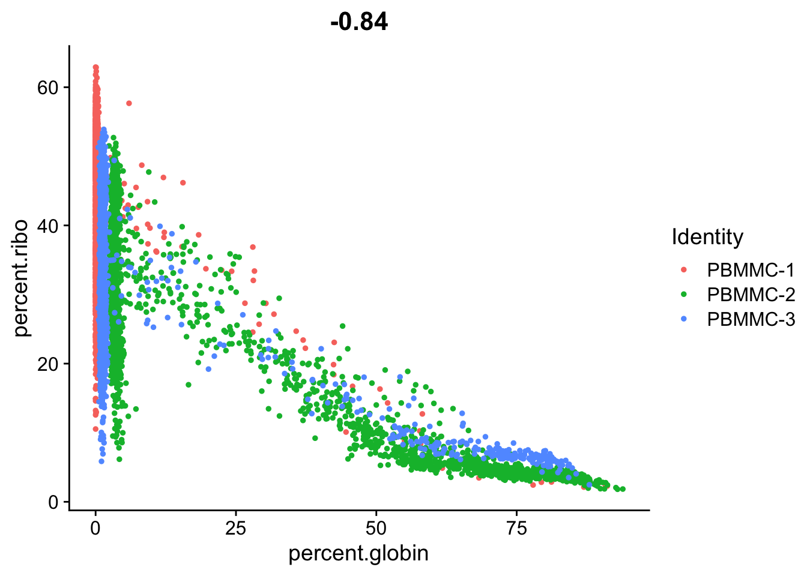
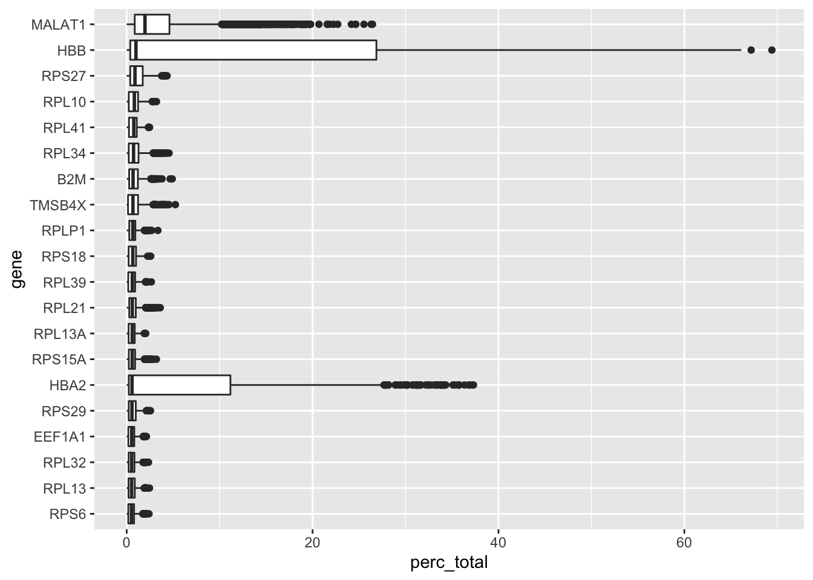

Analysis tools and QC
After having completed this chapter you will be able to:
- Load single cell data into R
- Explain the basic structure of a
Seuratobject and extract count data and metadata - Calculate and visualize quality measures based on:
- mitochondrial genes
- ribosomal genes
- hemoglobin genes
- relative gene expression
- Interpret the above quality measures per cell.
- Perform cell filtering based on quality thresholds
Material
Exercises
Loading scRNAseq data
The next step after the generation of the count matrices with cellranger count, is the data analysis. The R package Seurat is currently the most popular software to do this. To start working with Seurat you can load it into your environment like this:
You could type and copy-paste the commands of these exercises directly in the console. However, that makes it hard to track what you have done. In addition, it can be nice to add comments to your code, so you can read back why you have made certain choices. In order to do that, do not write commands in the console, but write them in a script, and send them to the console with ^ Ctrl + ⏎ Enter (Windows) or ⌘ Command + ⏎ Enter (MacOS).
First, we will load a file specifying the different samples, and create an object specifying the location of the count data:
The object datadirs is a named vector specifying the paths of the count directories for each sample:
PBMMC-1
"course_data/count_matrices/PBMMC_1/outs/filtered_feature_bc_matrix"
PBMMC-2
"course_data/count_matrices/PBMMC_2/outs/filtered_feature_bc_matrix"
PBMMC-3
"course_data/count_matrices/PBMMC_3/outs/filtered_feature_bc_matrix" To run through a typical Seurat analysis, we will use the files that are in the directory data/filtered_feature_bc_matrix. This directory is part of the output generated by cellranger. To load this data into R and generate a sparse matrix, run the following command:
sparse_matrix <- Seurat::Read10X(data.dir = datadirs)This imports a raw count matrix. Have a look at the counts of the first 30 cells of three genes by running:
sparse_matrix[c("PECAM1", "CD8A", "TSPAN1"), 1:30]3 x 30 sparse Matrix of class "dgCMatrix" [[ suppressing 30 column names 'PBMMC-1_AAACCTGCAGACGCAA-1', 'PBMMC-1_AAACCTGTCATCACCC-1', 'PBMMC-1_AAAGATGCATAAAGGT-1' ... ]]
PECAM1 . . . . . . . 1 . . . . 1 . . 1 . . . . . . . 1 . . . . . .
CD8A . 1 . . 1 . . . . . . . . . . . . . . . . . . . . . . . . .
TSPAN1 . . . . . . . . . . . . . . . . . . . . . . . . . . . . . .You will see many dots (zeros) and a few integers representing the counts per gene per cell.
To generate a Seurat object, we will run CreateSeuratObject. Note that while creating the object, we already do some mild filtering; we only import genes that are expressed in at least 3 cells, and we only import cells that have at least 100 different genes expressed:
seu <- Seurat::CreateSeuratObject(counts = sparse_matrix,
project = "pbmmc",
min.cells = 3,
min.features = 100)Warning: Feature names cannot have underscores ('_'), replacing with dashes
('-')::
Here, we define the function together with its associated package. We do that by the syntax package::function. Of course, you can also call library(package), and only type the function name. Since we use many different packages in this course, it can be confusing which function comes from which package. Therefore, we chose to always associate the package with the called function.
check what’s in the seu object, by typing seu in the R console. How many features are in there? And how many cells?
Typing seu should return:
An object of class Seurat
18673 features across 6946 samples within 1 assay
Active assay: RNA (18673 features, 0 variable features)This means that we have 18673 genes (features) in there, and 6946 cells (samples)
The Seurat object
The seu object we have created has the class Seurat. The object contains multi-level slots and lists. Each Seurat object contains exactly the same slots that are specified in the image below (get slot descriptions by typing ?SeuratObject::Seurat). You can get the information inside a slot with @, in the same way as you would use the $ for lists (e.g. seu@meta.data will return the a data frame with information on each cell). Slots can be filled with other R objects, like lists, vectors, data frames or any other class. Here’s an overview of all slots that are in a Seurat object:

In addition to the original count table, the Seurat object can therefore store a lot of information that is generated during your analysis, like results of a normalization (@assays$RNA@data) a PCA or UMAP (@reductions) and the clustering (@graphs). It also tracks all the commands that have been used to generate the object in its current state (@commands). Therefore, while going through the analysis steps, the same object gets more and more of its slots filled. Because most Seurat functions return the input object + adjusted slots, we can use this syntax:
seurat_object <- Seurat::function(seurat_object)So, the function takes an object as input and we assign it to an object with the same name. Meaning that we overwrite the object used as input. This is fine in many cases, because Seurat adds information to the input object, and returns is. We will use this syntax for the first time at Normalization and scaling.
Seurat object
In order to get specific data you can use the @ and $ symbols to browse through the objects. However, Seurat comes with a lot of convenience functions, that are easier to use. So, e.g. to get the raw count matrix, you could type seurat_object@assays$RNA@counts, however, this is equivalent to GetAssayData(object = seurat_object, slot = "counts"). More information on these convenience functions here.
A. Have a look at the seu object by running View(seu). What is in there? What is stored in @active.ident?
B. Have a look at the data.frame stored at seu@meta.data what kind of information is in there?
Answer A
There are many slots as described in the above figure. The slot @active.ident contains data specifying the samples, e.g. table(seu@active.ident) returns:
PBMMC-1 PBMMC-2 PBMMC-3
1612 3105 2229 Which are the number of cells per sample.
Answer B
Running head(seu@meta.data) returns:
orig.ident nCount_RNA nFeature_RNA
PBMMC-1_AAACCTGCAGACGCAA-1 PBMMC-1 2401 909
PBMMC-1_AAACCTGTCATCACCC-1 PBMMC-1 3532 760
PBMMC-1_AAAGATGCATAAAGGT-1 PBMMC-1 3972 1215
PBMMC-1_AAAGCAAAGCAGCGTA-1 PBMMC-1 3569 894
PBMMC-1_AAAGCAACAATAACGA-1 PBMMC-1 2982 730
PBMMC-1_AAAGCAACATCAGTCA-1 PBMMC-1 22284 3108Giving you the names of three columns and a row for each cell:
-
orig_ident: the original identity (origin) of a cell. -
nCount_RNA: the number of reads assigned to a cell. -
nFeature_RNA: the number of expressed features (genes) per cell.
Luckily, usually you do not have to dive into this structure to retrieve information. For example, information in the slot @meta.data can be retrieved and set by using $ or [[]].
There is a subtle difference here between $ and [[]]. While $ returns a vector of the column in @meta.data, [[]] returns a data.frame.
Generate a histogram of the column nCount_RNA at seu@meta.data, with the base function hist.
There are also built-in functions to plot data from Seurat object, for example FeatureScatter. This function enables you easily draw a scatterplot from a Seurat object:
Seurat::FeatureScatter(seu, feature1 = "nCount_RNA", feature2 = "nFeature_RNA")
You can find a nice overview of such functions here.
Visualizing QC per cell and gene
While generating the Seurat object, there were already some quality measures calculated for each cell, namely the total UMI counts per cell (nCount_RNA) and the total number of detected features per cell (nFeature_RNA). We can plot those in a violin plot and evaluate their distribution per sample:
You can see that there is quite a wide range for both. A cell with low number of detected features or counts might not give you a lot of information, while a high number of detected features/counts might point to doublets.
Single cells have often undergone sampling and/or dissociation and/or sorting. Therefore, there are often cells and genes in your dataset that cause variation due to technical reasons. In the following steps, we will visualize those and make decisions on whether or not to remove cells or genes with extreme values.
We will start with calculating the percentage of counts coming from transcript types:
- Mitochondrial genes: If a cell membrane is damaged, it looses free RNA quicker compared to mitochondrial RNA, because the latter is part of the mitochondrion. A high relative amount of mitochondrial counts can therefore point to damaged cells (Lun et al. 2016).
- Ribosomal genes: Are not rRNA (ribosomal RNA) but is mRNA that code for ribosomal proteins. They do not point to specific issues, but it can be good to have a look at their relative abundance. They can have biological relevance (e.g. Caron et al. 2020).
- Hemoglobin genes: these transcripts are very abundant in erythrocytes. Depending on your application, you can expect ‘contamination’ of erythrocytes and select against it.
In order to have an idea about the relative counts of these type of genes in our dataset, we can calculate their expression as relative counts in each cell. We do that by selecting genes based on patterns (e.g. ^MT- matches with all gene names starting with MT, i.e. mitochondrial genes):
# mitochondrial genes
seu <- Seurat::PercentageFeatureSet(seu,
pattern = "^MT-",
col.name = "percent.mito")
# ribosomal genes
seu <- Seurat::PercentageFeatureSet(seu,
pattern = "^RP[SL]",
col.name = "percent.ribo")
# hemoglobin genes (but not HBP)
seu <- Seurat::PercentageFeatureSet(seu,
pattern = "^HB[^(P)]",
col.name = "percent.globin")Run the commands and check out the metadata data frame at seu@meta.data. What has changed?
If we type head(seu@meta.data) it returns:
orig.ident nCount_RNA nFeature_RNA percent.mito
PBMMC-1_AAACCTGCAGACGCAA-1 PBMMC-1 2401 909 2.540608
PBMMC-1_AAACCTGTCATCACCC-1 PBMMC-1 3532 760 5.181200
PBMMC-1_AAAGATGCATAAAGGT-1 PBMMC-1 3972 1215 4.934542
PBMMC-1_AAAGCAAAGCAGCGTA-1 PBMMC-1 3569 894 3.250210
PBMMC-1_AAAGCAACAATAACGA-1 PBMMC-1 2982 730 3.688799
PBMMC-1_AAAGCAACATCAGTCA-1 PBMMC-1 22284 3108 3.181655
percent.ribo percent.globin
PBMMC-1_AAACCTGCAGACGCAA-1 28.65473 0.1665973
PBMMC-1_AAACCTGTCATCACCC-1 55.03964 0.1981880
PBMMC-1_AAAGATGCATAAAGGT-1 30.43807 0.3776435
PBMMC-1_AAAGCAAAGCAGCGTA-1 55.02942 0.3642477
PBMMC-1_AAAGCAACAATAACGA-1 54.49363 0.1006036
PBMMC-1_AAAGCAACATCAGTCA-1 23.40693 36.9682283So, the function PercentageFeatureSet adds a column to meta.data, specifying the percentage of counts for the specified gene sets.
Now we can plot the distribution of these percentages in a violin plot:
You can see that PBMMC-2 is quite different from the two others, it has a group of cells with very low ribosomal counts and one with very high globin counts. Maybe these two percentages are negatively correlated? Let’s have a look, by plotting the two percentages against each other:
Seurat::FeatureScatter(seu,
feature1 = "percent.globin",
feature2 = "percent.ribo")
Are they correlated? What kind of cells might have a high abundance of hemoglobin transcripts and low ribosomal transcripts?
Yes there is a negative correlation. Erythrocytes (red blood cells) have a high abundance of hemoglobin transcripts and low abundance of ribosomal transcripts. These are most likely erythroid cells, i.e. the cells predecessing erythrocytes in the bone marrow.
We can also evaluate the relative expression of other genes in our dataset, for example, the ones that are most highly expressed. Some very highly expressed genes might point to a technical cause, and we might consider to remove them. Below you will find a simple function to generate a boxplot of relative counts per gene per cell. Load it into your environment and run it on our seu object:
library(ggplot2)
library(Matrix)
library(Seurat)
most_expressed_boxplot <- function(object, ngenes = 20){
# matrix of raw counts
cts <- Seurat::GetAssayData(object, assay = "RNA", slot = "counts")
# get percentage/cell
cts <- t(cts)/colSums(cts)*100
medians <- apply(cts, 2, median)
# get top n genes
most_expressed <- order(medians, decreasing = T)[ngenes:1]
most_exp_matrix <- as.matrix((cts[,most_expressed]))
# prepare for plotting
most_exp_df <- stack(as.data.frame(most_exp_matrix))
colnames(most_exp_df) <- c("perc_total", "gene")
# boxplot with ggplot2
boxplot <- ggplot(most_exp_df, aes(x=gene, y=perc_total)) +
geom_boxplot() +
coord_flip()
return(boxplot)
}
most_expressed_boxplot(seu, 20)
As for most 10X based poly-A enriched single cell datasets, we find a relatively high expression of MALAT1. Many researchers choose to remove it, but it can have biological relevance (e.g. Shaat et al. 2021).
Cell filtering
Based on the QC process we went through we can come to the following conclusions:
- There are no cells with very high mitochondrial gene counts.
- There are some cells with a hemoglobin and low ribosomal counts, and these are probably erythrocytes.
- There are some cells with a very low and very high number of features. These might point to non-informative cells and doublets respectively.
- The ‘usual suspect’ MALAT1 sometimes makes up a large part of the counts per cell. As we do not see any other suggestions of dying/stressed cells, we leave it in.
In this case, a sensible decision would be to do mild filtering on the number of features per cell and mitochondrial counts. We can leave the possible erythrocytes in for now, and see where they end up later during the dimensionality reduction.
In the M&M of the publication, the authors describe that they have used a threshold of < 8% mitochondrial counts and > 200 features per cell. To filter against possible doublets, here, we also filter out cells with > 5000 detected features/cell. Filtering Seurat objects can be done with the subset method for class SeuratObject:
seu <- subset(seu, subset = nFeature_RNA > 200 &
nFeature_RNA < 5000 &
percent.mito < 8)To evaluate this did the trick we can visualize those parameters again in a violin plot: